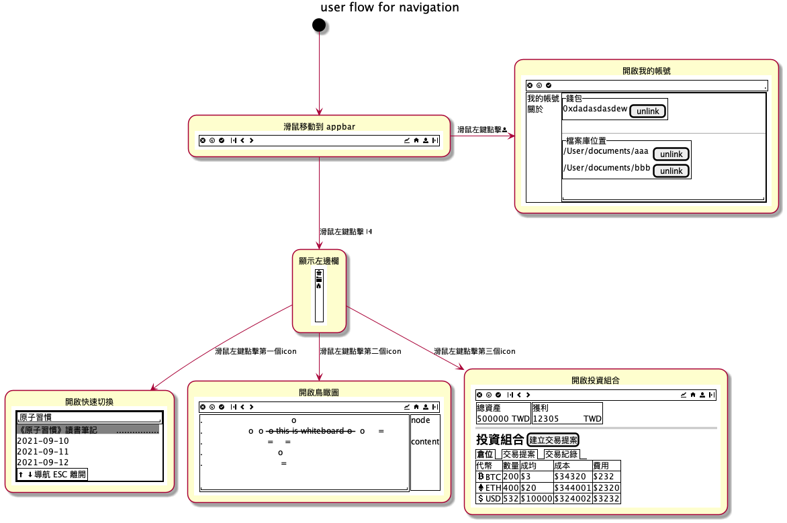
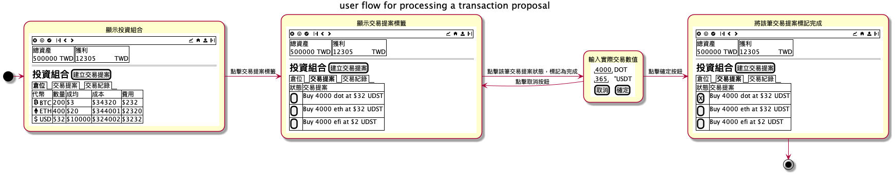

Cuilian Demo 設計文件
本文件描述淬鍊（cuilian）Demo 的設計文件。淬鍊是一個去中心化加密貨幣投資基金管理軟體，允許任何人無需許可的在區塊鏈上建立自己的主題式加密貨幣基金 DAO。 本 Demo 的動機是以假資料展示個人用介面互動揭露設計概念，取得介面轉換動線回饋，此階段不設計任何 Defi 機制以及代幣經濟。
1. 使用者圖像
年齡在 35 歲的加密貨幣投資散戶，以 Hold 為主要交易策略。
2. 功能
淬鍊包含兩大功能，分別是投資筆記跟投資組合管理。
2.1. 投資筆記
投資筆記提供使用者分析投資標或是重大資訊作為交易的依據。
當投資人想要計算投資標的的價格跟內在價值時，必定會需要感知整個社會有多少意見，但影響投資標的價格有很多分析師給出不同說法，要判斷誰說得有道理，需要在短時間掌握一門新領域知識，對新知識的掌握度越深入，可以為投資人帶來分析優勢。
舉例來說，一位投資人會為了要搞懂區塊鏈穩定幣監管範圍對自己的衝擊，需要先閱讀法規草案，對其知識點深入了解細節，所謂知識點即是不解其意的名詞，而要了解其中內涵，需要找出定義，方法可以是閱讀書籍、論文、研究報告，或是關鍵人物在社群媒體過去發表的言論，並且勾勒出整個知識網路，以方便在之後的爭論比較中，分析出有多少種立場、多少種決策結果，不同勢力的攻防點，並預演可能出現的狀況來判斷是否有定價錯誤跟催化因素，並據以低價購入投資標的，獲得超額報酬。
為了達到這個目的，投資人需要從若干文件，逐步畫出會閱讀這些文件的群體有哪些人，意見領袖又是誰，是否有代表性跟多元性，再繼續深入了解這些人的看法，以判斷政治、社會變遷、以及技術趨勢作為調倉判斷，整個分析過程約略可以下圖形象表示。(圖取自於 Davis, 2010, Concept mapping, mind mapping and argument mapping: what are the differences and do they matter?)
筆記並可以組織成科技發展地圖，用以盤點技術現況，說明技術與商業成熟度、智財權發展現況等早期技術TRL、早期產品、成熟產品的改良技術等做競爭分析，競爭分析包括團隊過去發展的相關技術、預計導入的相關技術、盤點各節點上的主要競爭者、國內外產業與學界名單、發展現況。
又因大多數原始資料為保密文件，安全以及隱私性是重要考量，因此時下流行的雲端筆記如 Roam Research 、Notion、Obsidian 、EverNote 皆不在其考量範圍。此外，為了避免工具失去維護導致重要資料遺失，投資人會希望儲存知識的載體應該為純文字（plan-text）檔案，且為通用格式，但又希望可依據不同需求作出不同的同構映射，舉例來說，映射成時間軸，地圖，人物關係，或是在說服階段時如 Zettelkasten 一樣可以將不同的爭論重組成一篇投資計畫，並據此執行。
2.2. 投資組合管理
投資組合提供使用者追蹤投資標的績效以及當初交易的依據筆記。
紀錄交易的細節，在之後整合 DAO 功能時才考慮多人決策的功能。
3. 術語定義
本章描述術語定義。
| 中文 | 英文 | 一句話描述 |
|---|---|---|
| 每日資訊流 | dailystream | 以時間排序顯示日記的頁面 |
| 錢包 | wallet | 加密貨幣錢包 |
| 頁 | page | 包含許多子節點的節點 |
| 節點 | node | 具有原子化（atomic）性質的筆記 |
| 圖 | graph | 以階層圖呈現節點內的內容與關係 |
| 快速切換 | nodeswitcher | 搜尋開啟或建立頁或節點 |
| 鳥瞰圖 | birdeye | 顯示全部的節點與關係 |
| 儲存庫 | vault | 存放 .org 的目錄 |
| 投資組合 | portfolio | 顯示投資組合及當前損益 |
| 快速紀錄 | capture | 快速紀錄並建立節點的編輯區 |
4. 情境故事
本章節描述情境故事。
4.1. 分析議題對持倉的影響
4.1.1. 我們要解決什麼問題？以及為什麼？
不同投資者、創辦人在議題常有意見衝突，使用者需要了解是否會對持倉有索影響。使用者目前使用 org-roam 以Zettelkasten 方式來整理術語、相關資訊連結、跟論點。 目前沒有像 Logseq, Obsidian, project meta 將筆記的關係以視覺化方式呈現出來，讓使用者能有全局觀。
4.1.2. 情境故事
當意見領袖熱議的議題出現時，我希望能針對不同意見領袖的論點有全局觀，所以我可以掌握有多少立場跟論述依據，並選擇自己的行動。
4.1.3. 我們如何定義成功
使用者能夠從不同渠道的訊息中整理出關鍵人物所持的論點及其支持或反對的對應關係。
4.1.4. 範圍
一個能將準備好的 org-roam 假資料以圖像方式編輯筆記關係的功能，包含一個能將不同檔案內的筆記段落以卡片方式顯示在畫布上的圖像編輯器。此版不包含編輯功能。
4.2. 規劃交易計劃
4.2.1. 我們要解決什麼問題？以及為什麼？
4.2.2. 情境故事
當我需要了解虧損原因時，我希望能夠查看該筆虧損交易的原因，所以我可以避免再次犯下錯誤。
4.2.3. 我們如何定義成功
4.2.4. 範圍
4.3. 復盤交易
4.3.1. 我們要解決什麼問題？以及為什麼？
4.3.2. 情境故事
當我需要了解虧損原因時，我希望能夠查看該筆虧損交易的原因，所以我可以避免再次犯下錯誤。
4.3.3. 我們如何定義成功
4.3.4. 範圍
5. 使用者流程
本章描述框線圖（wireframe）的轉換動線。
5.1. 導航

5.2. 第一次啟動

5.3. 開啟首頁
預設首頁是每日資訊流頁面。

5.4. 連接錢包
5.5. 新增節點到頁面
5.6. 新增節點到圖
5.7. 以頁面的方式開啟節點

5.8. 以圖的方式開啟節點
5.9. 提案購買/賣出
5.10. 處理交易提案

6. 操作定義
本章描述操作快捷鍵。
| 按鍵組合 | 說明 |
|---|---|
| Cmd + o | 開啟儲存庫 |
| Cmd + 1 | 開啟快速切換 |
| Cmd + 2 | 開啟鳥瞰圖 |
| Cmd + 3 | 開啟投資組合 |
| Cmd + f | 尋找節點 |
| Cmd + i | 插入節點 |
| Cmd + s | 存擋 |
| Cmd + c | 複製 |
| Cmd + v | 貼上 |
| Esc | 取消當前動作 |
7. 介面示意圖
這裡以名為 SenseTW 的線上意見整理工具作為介面設計參考。sensetw 當初開發目的是為了做社會議題分析。
7.1. 鳥瞰圖

7.2. 在鳥瞰圖檢視節點
7.3. 處於論點對應的節點

8. 技術架構
- 使用者透過 MacOs Desktop App 執行區塊鏈上的合約。(demo 不實作區塊鏈功能)
- 使用者的資料儲存在本地端。
- 使用者擁有的資料將能夠很容易地與其他文字編輯器、文字格式的記帳軟體整合。(以 org-mode 格式為主)
9. 聯絡
歡迎在 Twitter 聯絡 @hychen 給予設計意見。